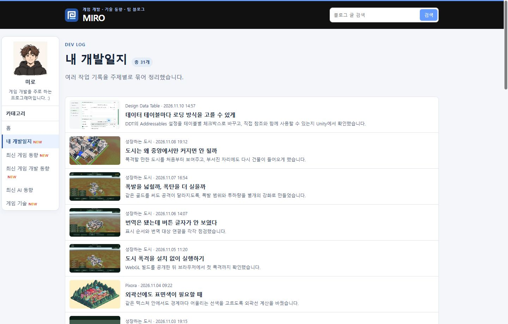
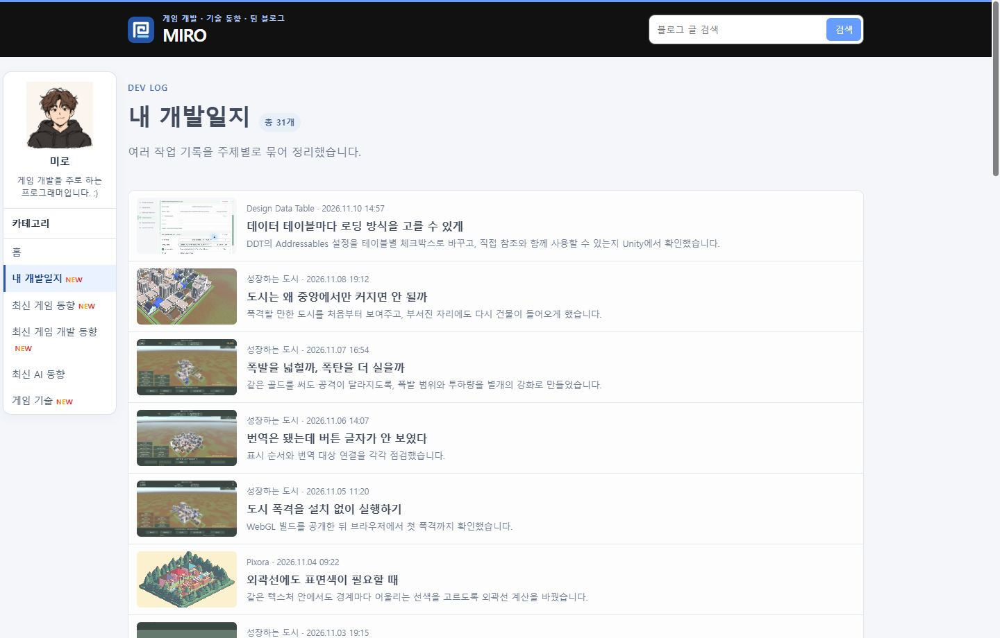

Tracefolio REPORTS & ISSUES
Tracefolio REPORTS & ISSUES문문동준 개발 블로그수정사항
페이지 본문 공개 후 페이드 시작
완료폰트 대기 중 소진되던 페이드를 본문이 보이는 시점으로 옮겼습니다.
작업 결과
공개 사이트에서 폰트 지연을 재현해 보이는 상태에서 페이드가 실행됨을 확인했습니다.
변경 내용
적용 내용
style.css에서 첫 화면 가림 속성이 없는 경우에만 기존 260ms 본문 페이드를 시작합니다. 이전 규칙은 폰트 대기로 본문이 숨겨져 있어도 타이머가 흘렀습니다.
html:not([data-first-paint]) #main {
animation: page-enter 260ms ease-out;
}
대화 기록
- 사용자 — “페이지 전환 애니메이션 또 없어짐 왜 이러냐”
- AI — 공개 브라우저에서 폰트 준비를 지연시켜, 본문 가림 중 페이드가 끝나는 상황을 재현했습니다. 가림이 해제될 때 시작하도록 바꿨습니다.
검증
커밋 7d4dab6을 푸시했습니다. Chrome 156에서 폰트 준비 지연을 재현한 채 홈에서 게시판 링크를 눌렀습니다. 수정 전에는 494ms에 페이드가 시작되고 752ms에 끝났으며, 그동안 본문이 가려졌습니다. 1319ms에 본문이 나타날 때 불투명도는 이미 1이었습니다. 수정 후 1341ms에 본문이 불투명도 0.35로 나타났고, 1358ms에 보이는 상태에서 페이드가 시작했습니다. 불투명도가 1에 도달하는 것도 확인했습니다. 수정 후 화면은 가시 전환 중 애니메이션을 잠시 멈춰 캡처했습니다.


남은 사항
폰트 지연 시 페이드 검증 기준을 프로젝트 지침에 추가했습니다. 전역 지침 변경은 없습니다.
작업 시간
- 제안 시간: 원인 확인과 수정 약 2분
- 실제로 완료된 시간: 블로그 공개 확인까지 약 2분 32초. 2026-11-10 18:25:03 KST
- XERJ: 미사용 — 코드 검색 근거가 제공되지 않았습니다.